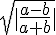
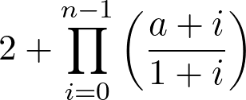
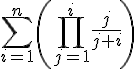
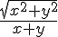

Liczba punktów za każde zadanie oprócz ostatniego podana jest na początku jego treści w nawiasach.
Uwaga: programy nie muszą sprawdzać poprawności danych jeżeli nie jest to jawnie powiedziane w treści konkretnego zadania.
(2 pkt.) Napisz program, który pobierze od użytkownika przebytą drogę w metrach oraz czas w sekundach i wyświetli średnią prędkość w metrach na sekundę.
Przykładowe użycie programu:
Podaj przebytą drogę (m): 30 Podaj czas (s): 40 Średnia prędkość: 0.75 m/s(3 pkt.) Napisz program, który pobierze od użytkownika przebytą drogę w metrach oraz czas w sekundach i wyświetli średnią prędkość w kilometrach na godzinę.
Przykładowe użycie programu:
Podaj przebytą drogę (m): 30 Podaj czas (s): 40 Średnia prędkość: 2.7 km/h(3 pkt.) Napisz program, który pobierze od użytkownika liczbę całkowitą nieujemną i wyświetli jej cyfrę tysięcy.
Przykłady użycia programu:
Podaj liczbę całkowitą dodatnią: 3002 Cyfra tysięcy: 3(4 pkt.) Napisz program, który pobierze od użytkownika wartości dwóch liczb a i b a następnie wyświetli wartość wyrażenia .
Przykłady użycia progamu:
a = 4 b = 5 0.333333(3 pkt.) Napisz program, który pobierze od użytkownika liczbę całkowitą nieujemną a następnie wyświetli informację o tym czy liczba ta jest podzielna przez 10.
(5 pkt.) Napisz program, który pobierze od użytkownika cenę w złotych i groszach, a następnie wyświetli informację o tym czy cena mieści się w zakresie od 10 zł 50 gr do 20 zł 20 gr (włącznie).
Przykłady użycia programu
zł: 9 gr: 90 Cena spoza zakresu.(6 pkt.) Kalendarzowa wiosna zaczyna się 21 marca, lato — 22 czerwca, jesień — 23 września, a zima — 22 grudnia.
Napisz program, który pobierze od użytkownika datę — miesiąc i dzień (jako liczby). Następnie program wyświetli porę roku przypadającą na ten dzień.
Przykłady działania programu:
miesiąc: 10 dzień: 25 pora roku: jesień(6 pkt.) Napisz program, który pobierze od użytkownika liczbę dni w danym miesiącu oraz numer dnia, w który wypada pierwsza niedziela w tym miesiącu. Progam wyświetla numery dni wszystkich niedziel w miesiącu.
Przykłady użycia:
Podaj liczbę dni w miesiącu: 31 Podaj dzień pierwszej niedzieli w miesiącu: 3 Niedziele: 3 10 17 24 31(7 pkt.) Napisz program, który pobiera od użytkownika kolejne liczby całkowite dodatnie, a następnie wyświetla liczbę podanych przez użytkownika liczb parzystych i liczbę podanych liczb nieparzystych. Program kończy działanie po podaniu przez użytkownika liczby 0 (zero podane na końcu nie jest uwzględniane w liczeniu).
Przykład pracy z programem może wyglądać tak:
Podaj kolejną liczbę: 5 Podaj kolejną liczbę: 33 Podaj kolejną liczbę: 2 Podaj kolejną liczbę: 4 Podaj kolejną liczbę: 1 Podaj kolejną liczbę: 12 Podaj kolejną liczbę: 11 Podaj kolejną liczbę: 10 Podaj kolejną liczbę: 123457 Podaj kolejną liczbę: 0 liczb parzystych: 4 liczb nieparzystych: 5
(7 pkt.) Napisz program pobierający od użytkownika wartość liczb a
(typu double ) oraz n (całkowita) i wyświetlający
wartość wyrażenia  .
Przykład działania programu:
a: 3.5 n: 10 wynik: 143.839(8 pkt.) Napisz program pobierający od użytkownika wartość liczby całkowitej n i wyświetlający wartość wyrażenia  .
Przykład działania programu:
n: 2 wynik: 0.666667
(5 pkt.) Napisz funkcję mającą dwa
parametry typu double —
x i y. Funkcja
zwraca wartość .
(10 pkt.) Napisz program pobierający od użytkownika wyniki zawodów biegowych i wyświetlający informacje o najszybszym oraz najwolniejszym zawodniku i różnicy w czasie między nimi.
Program najpierw pobiera od użytkownika liczbę zawodników. Następnie pobiera czasy kolejnych zawodników (program ma wyświetlać numer zawodnika, którego czas pobiera; zawodnicy ponumerowani są od 1). Czas pobierany jest w godzinach, minutach i sekundach. Po zakończeniu pobierania danych program wyświetla numer i czas najszybszego zawodnika, numer i czas najwolniejszego zawodnika oraz różnicę ich czasów. Wszystkie czasy wyświetlane są w godzinach, minutach i sekundach.
Podczas pobierania danych program wymusza na użytkowniku podawanie poprawnych danych (liczba zawodników musi być dodatnia, liczba godzin musi być nieujemna, liczba minut i sekund musi być z zakresu 0—59).
Przykładowa sesja z programem może wyglądać tak:
Podaj liczbę zawodników: 0 Liczba zawodnikow musi być dodatnia. Podaj liczbę zawodników: -3 Liczba zawodnikow musi być dodatnia. Podaj liczbę zawodników: 5 Podaj czas 1. zawodnika. godziny: -3 Podaj liczbę nieujemną: -4 Podaj liczbę nieujemną: 3 minuty: 60 Podaj liczbę z zakresu 0-59: 0 sekundy: -4 Podaj liczbę z zakresu 0-59: 70 Podaj liczbę z zakresu 0-59: 59 Podaj czas 2. zawodnika. godziny: 3 minuty: 40 sekundy: 40 Podaj czas 3. zawodnika. godziny: 2 minuty: 30 sekundy: 50 Podaj czas 4. zawodnika. godziny: 10 minuty: 10 sekundy: 10 Podaj czas 5. zawodnika. godziny: 4 minuty: 5 sekundy: 6 Najszybszy zawodnik: 3 Czas: 2 g. 30 m. 50 s. Najwolniejszy zawodnik: 4 Czas: 10 g. 10 m. 10 s. Różnica w czasie: 7 g. 39 m. 20 s.